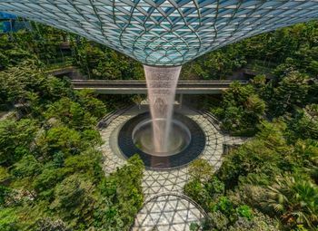
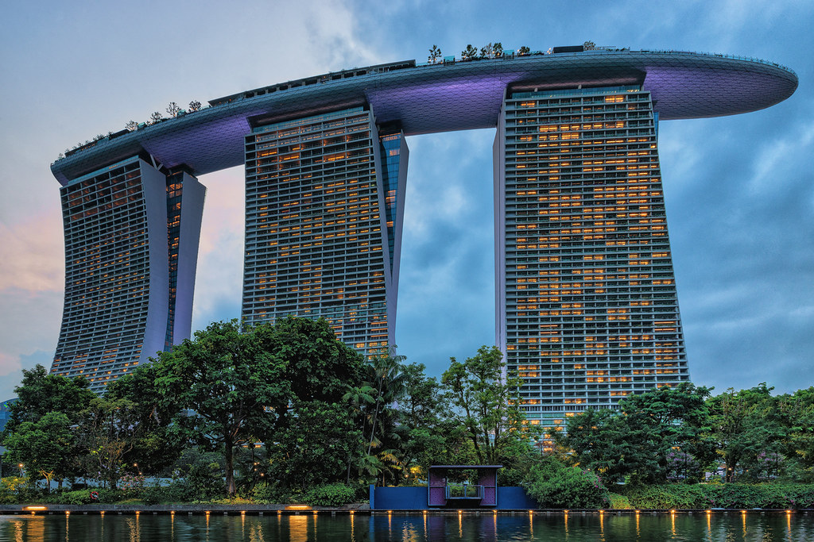
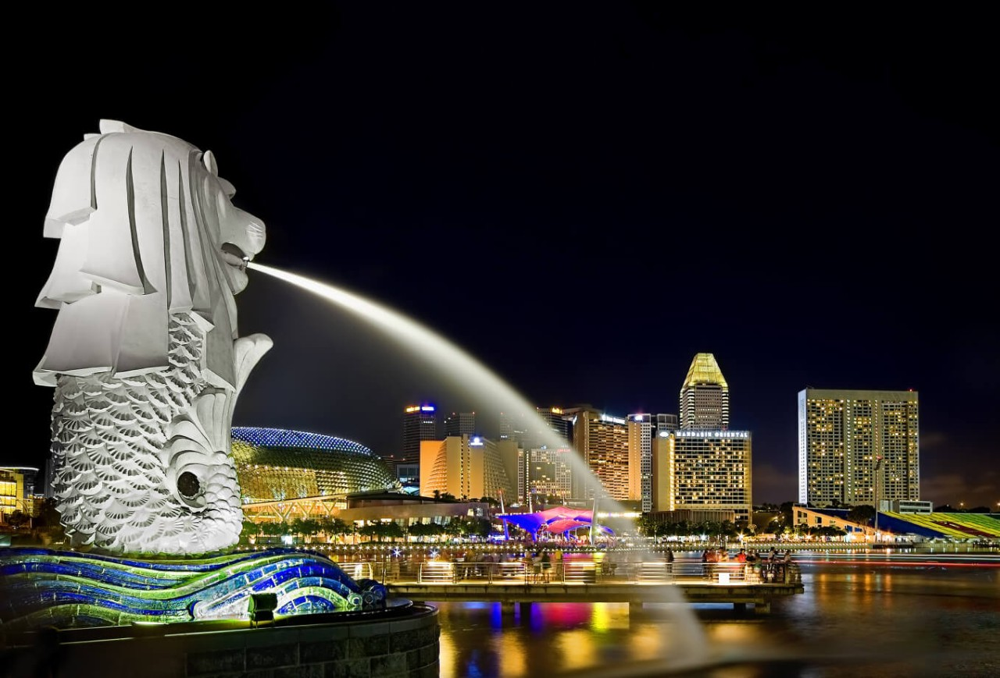
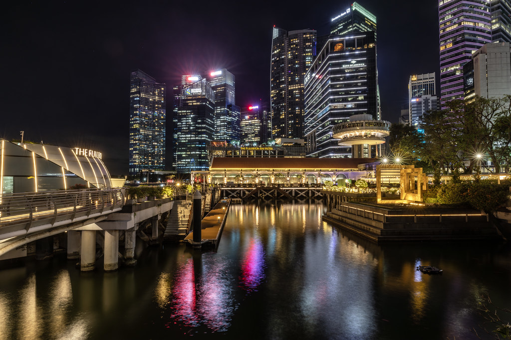
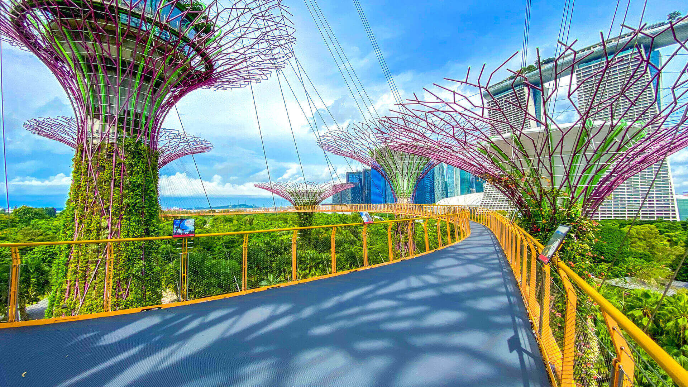

Explore Singapore
A Brief History
Singapore grew around the Singapore River, where maritime trade linked Southeast Asia with China, India, and Europe. British colonial rule established a free port in 1819, followed by Japanese occupation from 1942 to 1945, self-government in 1959, and independence in 1965. The modern city retains civic buildings, waterfront infrastructure, religious districts, and food traditions from these periods.
Attractions Map
Top Sights & Activities

FreeJewel Rain Vortex
The Rain Vortex opened with Jewel Changi Airport in 2019. Water falls 40 metres through the centre of the glass-and-steel roof into the Forest Valley below. Architect Moshe Safdie designed Jewel as a public complex connecting airport terminals with gardens, shops, dining, and transport links.

Free (SkyPark: S$35 non-peak / S$39 peak)Marina Bay Sands
Marina Bay Sands opened in stages during 2010 and 2011 on reclaimed land at Marina Bay. Moshe Safdie designed its three hotel towers and connecting SkyPark. The complex includes a hotel, convention centre, shops, theatres, casino, ArtScience Museum, and a public observation deck.

FreeMerlion
The 8.6-metre Merlion was built by local craftsman Lim Nang Seng and unveiled in 1972. Its fish body refers to Singapore's maritime past and the name Temasek, while its lion head refers to Singapura. The statue moved to its current Marina Bay site in 2002 after Esplanade Bridge restricted the former view.

FreeFullerton Promenade
The promenade follows the bay beside One Fullerton and the mouth of the Singapore River. This waterfront was once part of the colonial port district near Fullerton Square, the General Post Office, and the Waterboat House. The present pedestrian route connects Merlion Park with Collyer Quay and Marina Bay.

Free (OCBC Skyway: S$14 non-resident)Supertree Grove
Supertree Grove opened with Gardens by the Bay in 2012. Its tree-like structures rise between 25 and 50 metres and support vertical gardens. Some collect solar energy or rainwater for garden functions. The OCBC Skyway links two Supertrees 22 metres above the ground.